plot(pressure, pch=16)
text(150, 600,
"Pressure (mm Hg)\nversus\nTemperature (Celsius)")
plot(pressure, pch=20) # changed pch for smaller points
text(150, 600,
"Pressure (mm Hg)\nversus\nTemperature (Celsius)")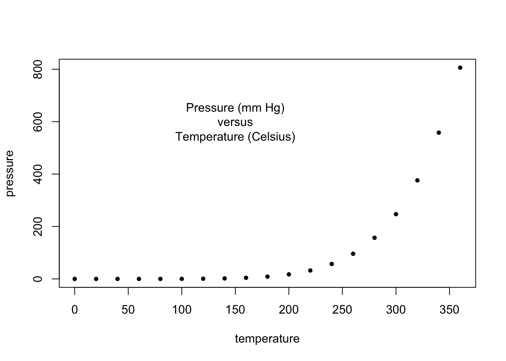
plot(pressure, pch=16)
text(150, 600,
"Pressure (mm Hg)\nversus\nTemperature (Celsius)")
plot(pressure, pch=20) # changed pch for smaller points
text(150, 600,
"Pressure (mm Hg)\nversus\nTemperature (Celsius)")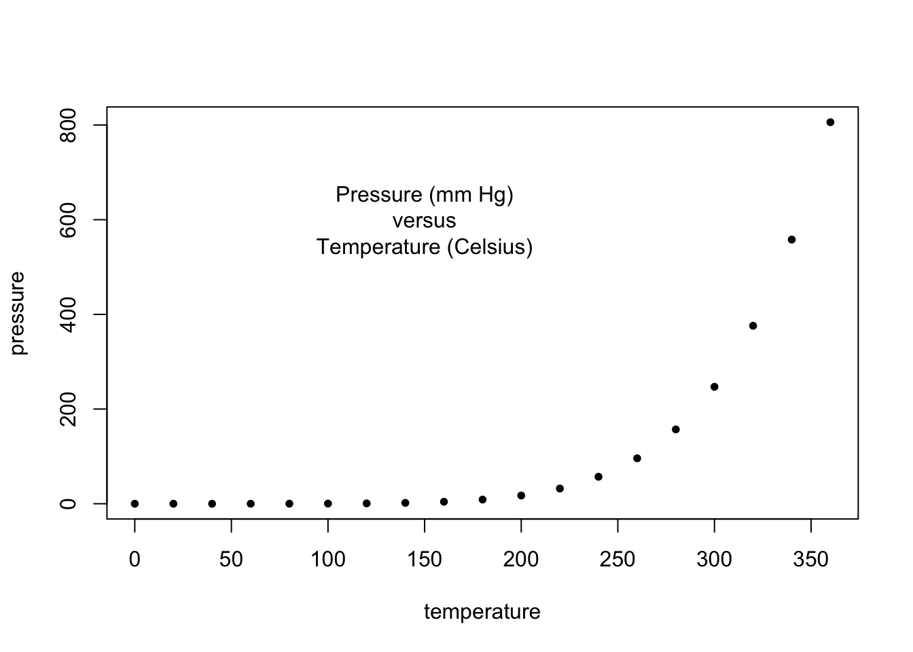
# Examples of standard high-level plots
# In each case, extra output is also added using low-level
# plotting functions.
par(mfrow=c(3,2)) # Setting the parameter (3 rows by 2 cols)
# Create scatterplot with incremental additions
x <- c(0.5, 2, 4, 8, 12, 16)
y1 <- c(1, 1.3, 1.9, 3.4, 3.9, 4.8)
y2 <- c(4, .8, .5, .45, .4, .3)
# Setting label orientation, margins c(bottom, left, top, right) & text size
par(las=1, mar=c(4, 4, 2, 4), cex=.7)
plot.new()
plot.window(range(x), c(0, 6))
lines(x, y1)
lines(x, y2)
points(x, y1, pch=16, cex=1) # Try different cex value? -- changed from 2 to 1 for smaller points
points(x, y2, pch=21, bg="lightblue2", cex=2) # Different background color -- changed from white to lightblue2
par(col="gray50", fg="gray50", col.axis="gray50")
axis(1, at=seq(0, 16, 4)) # What is the first number standing for? -- the first number stands for where the axis should be drawn relative to the plot, with 1=below, 2=left, 3=above and 4=right
axis(2, at=seq(0, 6, 2))
axis(4, at=seq(0, 6, 2))
box(bty="u")
mtext("Travel Time (s)", side=1, line=2, cex=0.8)
mtext("Responses per Travel", side=2, line=2, las=0, cex=0.8)
mtext("Responses per Second", side=4, line=2, las=0, cex=0.8)
text(4, 5, "Bird 131")
par(mar=c(5.1, 4.1, 4.1, 2.1), col="black", fg="black", col.axis="black")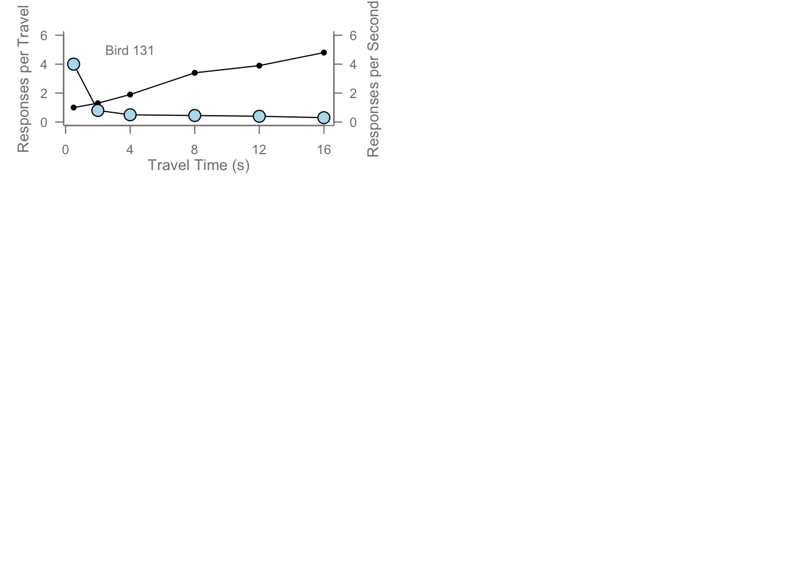
# Random data
Y <- rnorm(50)
# Make sure no Y exceed [-3.5, 3.5]
Y[Y <= -3 | Y >= 4] <- NA # Selection/set range -- range chnaged from (-3.5, 3.5) to [-3, 4]
x <- seq(-3.5, 3.5, .1)
dn <- dnorm(x)
par(mar=c(4.5, 4.1, 3.1, 0))
hist(Y, breaks=seq(-3.5, 3.5), ylim=c(0, 0.5),
col="lightgoldenrod2", freq=FALSE) # col changed from grey80 to lightgoldenrod2
lines(x, dnorm(x), lwd=2)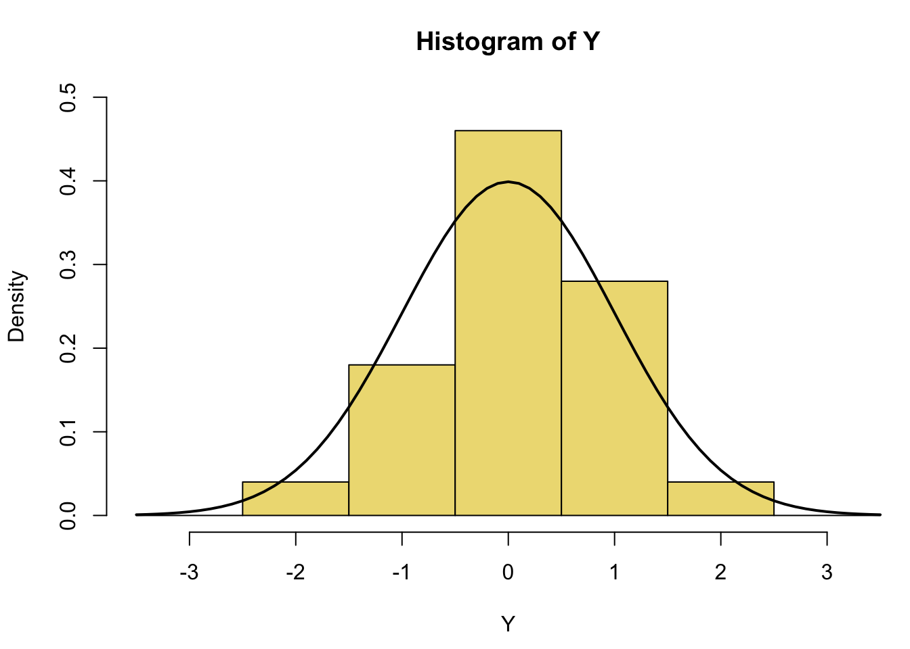
par(mar=c(5.1, 4.1, 4.1, 2.1))par(mar=c(2, 3.1, 2, 2.1))
midpts <- barplot(VADeaths,
col=gray(0.1 + seq(1, 9, 2)/11),
names=rep("", 4))
mtext(sub(" ", "\n", colnames(VADeaths)),
at=midpts, side=1, line=0.5, cex=0.75) # setting text below plot corresponding to column names -- made text bigger for better readability by changing cex from 0.5 to 0.75
text(rep(midpts, each=5), apply(VADeaths, 2, cumsum) - VADeaths/2,
VADeaths,
col=rep(c("white", "black"), times=3:2),
cex=0.8)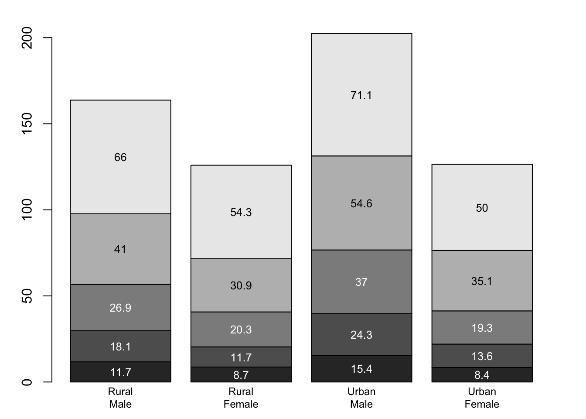
par(mar=c(5.1, 4.1, 4.1, 2.1)) x <- seq(-10, 10, length= 30)
y <- x
f <- function(x,y) { r <- sqrt(x^2+y^2); 10 * sin(r)/r }
z <- outer(x, y, f)
z[is.na(z)] <- 1
# 0.5 to include z axis label
par(mar=c(0, 0.5, 0, 0), lwd=0.2) # lwd changed from 0.5 to 0.2 for lighter line width
persp(x, y, z, theta = 30, phi = 30,
expand = 0.2) # expand changed from 0.5 to 0.2 to shrink plot in z 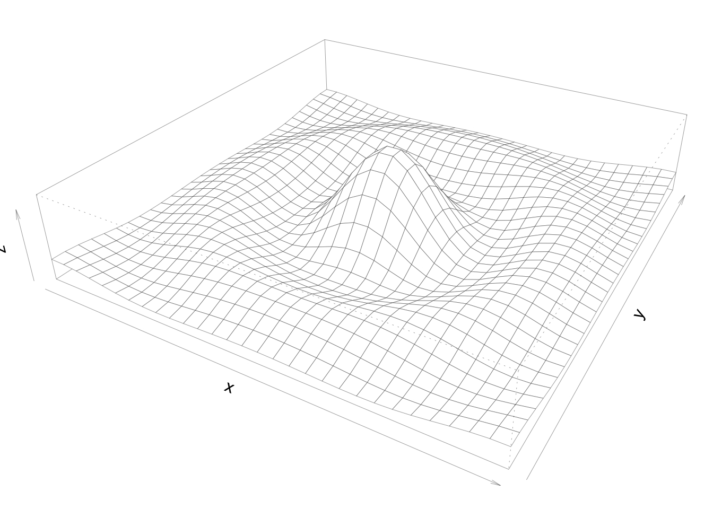
par(mar=c(5.1, 4.1, 4.1, 2.1), lwd=1)par(mar=c(0, 2, 1, 2), xpd=FALSE, cex=0.5)
pie.sales <- c(0.12, 0.01, 0.26, 0.45, 0.04, 0.12) # redistributed value originally belonging to Cherry to Ginger Pear
names(pie.sales) <- c("Blueberry", "Cherry",
"Apple", "Ginger Pear", "Other", "Vanilla") # pie sales column name changed from Boston Cream to Ginger Pear
pie(pie.sales, col = gray(seq(0.3,1.0,length=6))) 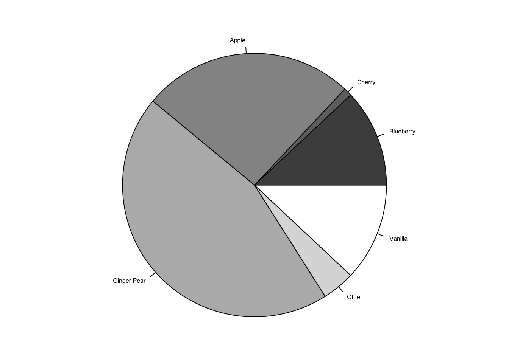
library(tidyverse)── Attaching packages ─────────────────────────────────────── tidyverse 1.3.2 ──
✔ ggplot2 3.3.6 ✔ purrr 0.3.4
✔ tibble 3.1.8 ✔ dplyr 1.0.10
✔ tidyr 1.2.1 ✔ stringr 1.4.1
✔ readr 2.1.2 ✔ forcats 0.5.2
── Conflicts ────────────────────────────────────────── tidyverse_conflicts() ──
✖ dplyr::filter() masks stats::filter()
✖ dplyr::lag() masks stats::lag()library(readxl)
path <- "assignment02_happyPlanetData.xlsx"
hpi <- read_xlsx(path, sheet = "1. All countries", range="A9:L161")New names:
• `` -> `...4`summary(hpi) HPI rank Country ISO ...4
Min. : 1.00 Length:152 Length:152 Length:152
1st Qu.: 38.75 Class :character Class :character Class :character
Median : 76.50 Mode :character Mode :character Mode :character
Mean : 76.50
3rd Qu.:114.25
Max. :152.00
Continent Population (thousands) Life Expectancy (years)
Min. :1.000 Min. : 299.9 Min. :53.30
1st Qu.:3.000 1st Qu.: 4970.4 1st Qu.:67.25
Median :5.000 Median : 11521.8 Median :74.65
Mean :4.717 Mean : 49738.8 Mean :73.06
3rd Qu.:7.000 3rd Qu.: 37530.2 3rd Qu.:78.62
Max. :8.000 Max. :1433783.7 Max. :84.90
Ladder of life (Wellbeing) (0-10) Ecological Footprint (g ha) HPI
Min. :2.375 Min. : 0.5157 Min. :24.33
1st Qu.:4.819 1st Qu.: 1.5019 1st Qu.:39.32
Median :5.526 Median : 2.5710 Median :44.70
Mean :5.532 Mean : 3.3252 Mean :44.55
3rd Qu.:6.282 3rd Qu.: 4.4461 3rd Qu.:50.87
Max. :7.780 Max. :15.0376 Max. :62.06
Biocapacity for year \r\n(g ha) GDP per capita ($)
Min. :1.56 Length:152
1st Qu.:1.56 Class :character
Median :1.56 Mode :character
Mean :1.56
3rd Qu.:1.56
Max. :1.56 hpi <- subset(hpi, select=-...4) # drop ...4 column
names(hpi) = c('rank', 'country', 'iso', 'continent', 'population', 'life_exp', 'wellbeing', 'footprint', 'hpi', 'biocapacity', 'gdp') # rename columns
class(hpi$gdp) = "double" # set gdp from character to doubleWarning in class(hpi$gdp) = "double": NAs introduced by coercionpar(las=1, mar=c(5, 5, 3, 3), cex=1.0) # labels alwayshorizontal, margins 5 for bottom/left, 3 for top/right, text size large at 1.0
plot(hpi$gdp, hpi$hpi, xlab="GDP per capita ($)", ylab="Happy Planet Index")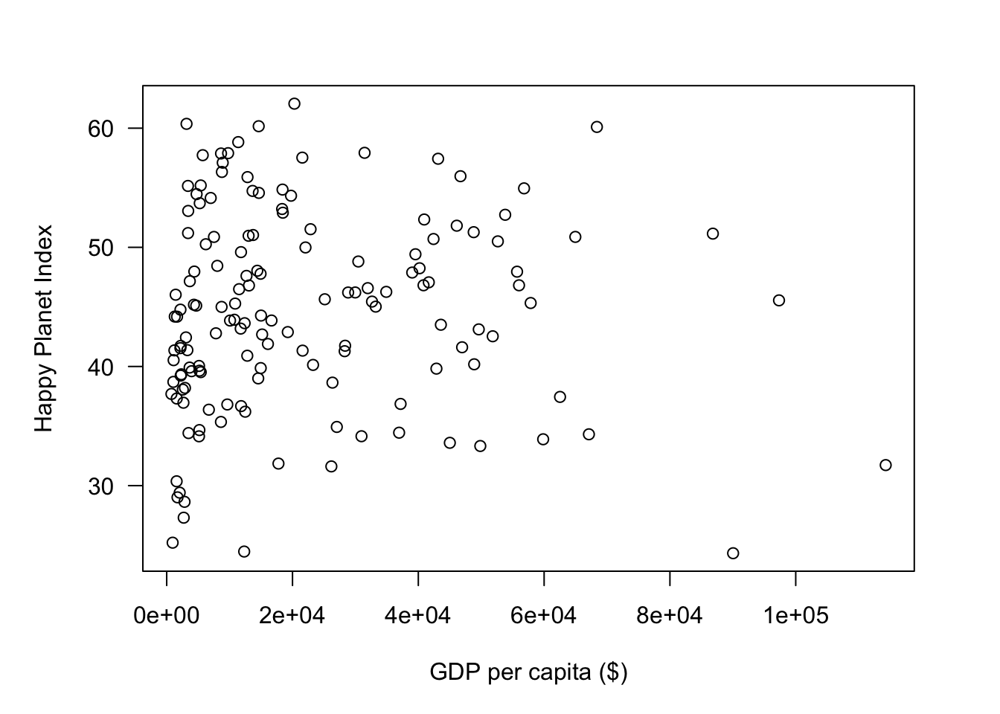
# set data to use
y <- hpi$gdp
x <- hpi$hpi
par(las=1, mar=c(5, 5, 3, 1) + 0.1, cex=0.75) # set label orientation, margins, text size
plot.new()
plot.window(range(20, 65), range(750, 115000)) # create plot window with given limits for x and y
lines(x, y) # create simple line plot
points(x, y, cex=.5) # add points to line plot
box(which="plot") # create box around plot
text(x=55, y=100000, labels=c("GDP per capita ($) vs. HPI")) # write text at coordinates(2,2)
mtext("Example plot made by layering base attributes", side=3, line=1) # write caption at top of plot
axis(2, at=c(750, 25000, 50000, 75000, 100000, 115000)) # draw y axis
axis(1, at=c(24.3, 30, 40, 50, 62.1)) # dram x axis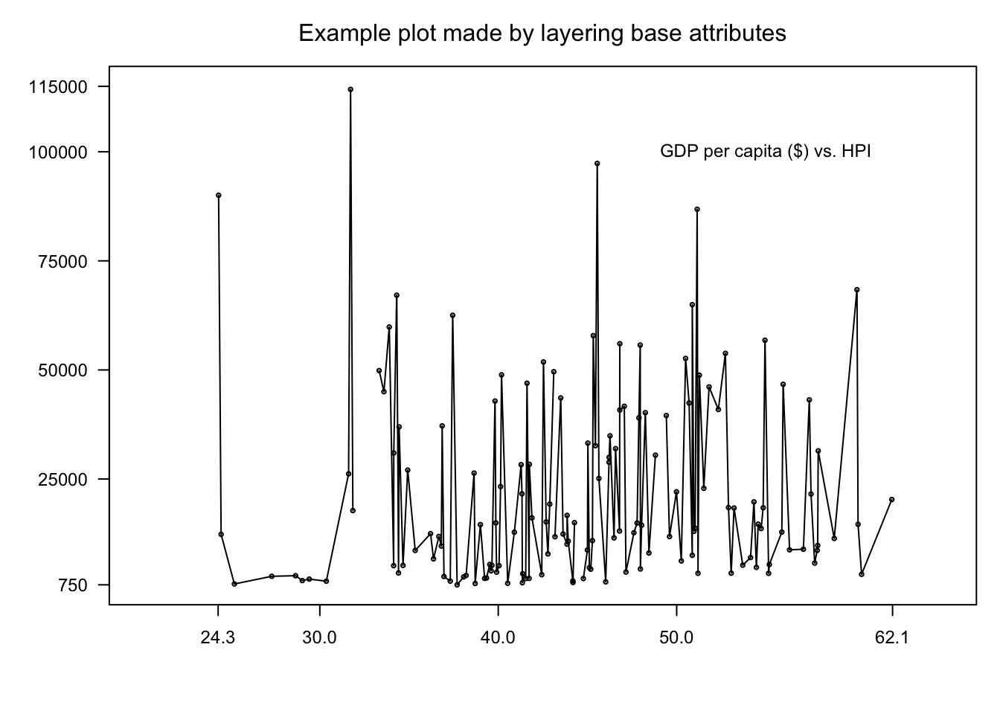
hist(x, col="lightblue", border="firebrick", xlab="HPI", main="Histogram of Happy Planet Index Scores") # create histogram, specifying bar fill and line color, x-axis label, and main label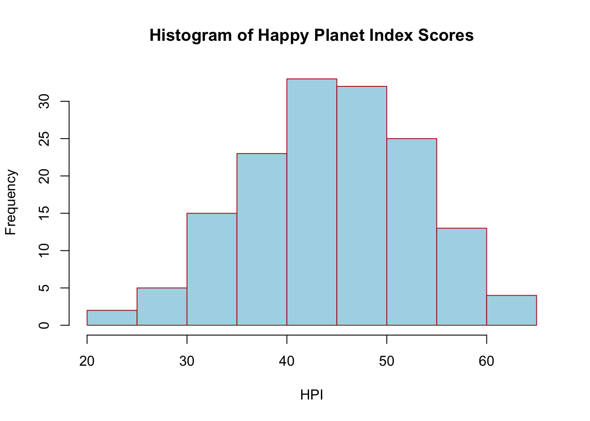
y_boxplot <- head(hpi$hpi[order(hpi$rank)], 5)
grp <- head(hpi$country[order(hpi$rank)], 5)
boxplot(y_boxplot ~ grp, xlab='Country', ylab='HPI') # boxplot of top 5 countries in hpi based on HPI rank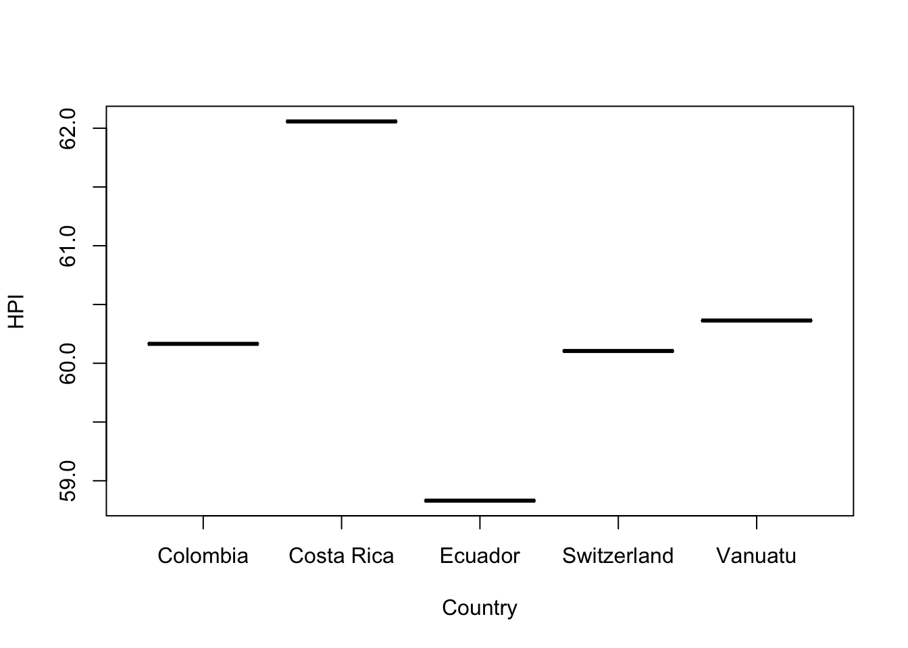
y2 <- hpi$population
par(las=1, mar=c(5, 5, 4, 1) + 0.1, cex=0.75) # set label orientation, margins, text size
plot.new()
plot.window(range(20, 65), range(750, 1500000)) # create plot window with given limits for x and
# hpi vs. population
lines(x, y2, col='darkorchid2')
points(x, y2, cex=1, col='darkorchid2', lwd=2)
# hpi vs. gdp
lines(x, y, col="royalblue2") # create simple line plot
points(x, y, cex=1, col='royalblue2', lwd=2) # add points to line plot
box(which="plot") # create box around plot
mtext("Example plot with legend", side=3, line=1, cex=1.5) # write caption at top of plot
mtext("HPI", side=1, line=3, cex=1) # write x-axis title
axis(2, at=c(750, 250000, 500000, 750000, 1000000, 1250000, 1500000)) # draw y axis
axis(1, at=c(24.3, 30, 40, 50, 62.1)) # dram x axis
# create legende
legend(x=50, y=1250000, c("GDP per capita ($)", "Population"), fill=c("royalblue2", "darkorchid2"))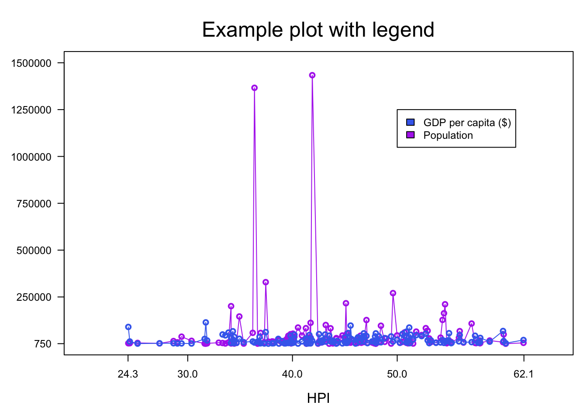
par(las=1, mar=c(1, 2, 3, 1) + 0.1, cex=1) # set label orientation, margins, text size
hpi_matrix <-as.matrix(subset(hpi, select=c(-country, -iso))) # take out character values and change from dataframe to matrix
persp(z=hpi_matrix, zlab="HPI", expand=0.2, main="Perspective plot of HPI")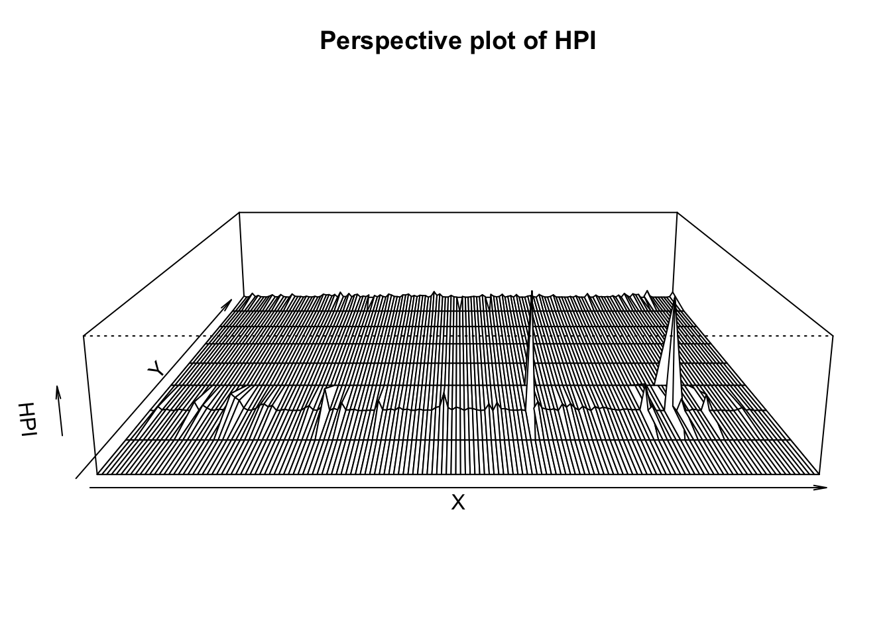
par(las=1, mar=c(1, 1, 2, 1) + 0.1, cex=1) # set label orientation, margins, text size
pie(head(hpi$population), labels=head(hpi$country), main="Population by Country") # create pit chart of first 6 country's populations, usning the country name column as labels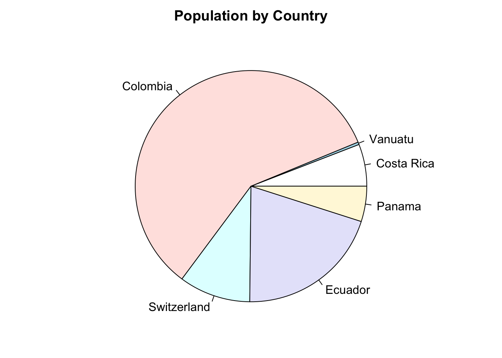